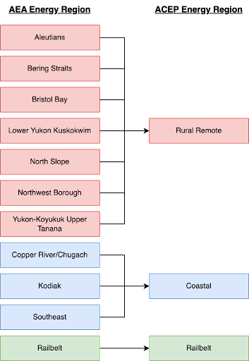

Data Analysis Methods
Data Sources, Region Definitions, and Description of the PCE Program
Data Sources
The data in this report was collected from a variety of sources and are listed below. Many electric utilities throughout the state are not required to submit annual reports to the federal government due to their size and/or number of customers. Therefore, our data sources encompass federal, state, commercial, and local filings as well as direct communications with utilities and state program managers. Each section of the report pulls data from a variety of these sources. The data was downloaded directly from the original source and concatenated to develop a dataset for this report. In some cases, a single observation is derived from multiple sources due to reporting limitations.
Below are relevant sources of data for the report.
Federal
State
- Alaska Energy Authority
- Power Cost Equalization Program Utility Monthly Reports
- Regulatory Authority of Alaska
Direct Communications
- Alaska Energy Authority
- Hydro/Wind Program Managers
- Village and Powerhouse Assessments
- Electric Utilities
Compilation
An Alaska engineering firm, DOWL, was hired to do the preliminary compilation of data and to develop the Excel workbooks that support this report. This step involved careful cross-referencing of assets between the various data sources and error checking by domain experts. At this point, aggregate calculations were created to match the tables found in previous Alaska Energy Statistics Reports. Data in this report were derived from those workbooks exported to CSV and SQLite formats; the original workbooks are available upon request.
Power Cost Equalization (PCE)
Alaska is famous for wide expanses of rugged terrain. Towns are often extremely distant from one another, or are separated by inaccessible mountains and glaciers. The utility landscape of Alaska resembles a sea of islands, very different from the interconnected grids of the contiguous United States.
In total, Alaska contains over 100 separate utilities, many of which serve a single small community. Most rely on diesel generators connected to huge fuel tanks, which receive a barge shipment of fuel in the summer that must last through the winter. If the town runs out of fuel during winter months, additional fuel has to be flown in at extreme expense. Predictably, electricity in these remote towns is prohibitively expensive. Some rural towns pay 3 to 5 times the rates of urban Alaska.
Urban Alaska has greatly benefited from large state-subsidized energy projects, such as the Bradley Lake Hydroelectric Project, the Four Dam Pool Projects, and the Alaska Intertie. In an effort to confer similar benefits to rural Alaska, the state of Alaska developed the Power Cost Equalization Program (PCE).
The PCE program reimburses rural utilities for credits that have been provided to eligible customers. Eligibility is limited to residential customers and community facilities. The subsidy applies to the first 750 kWh per month of residential consumption. Community facilities are subsidized up to the first 70 kWh per month per resident. The program is administered by the Regulatory Commission of Alaska (RCA) and the Alaska Energy Authority (AEA).
Please visit the Alaska Energy Authority PCE webpage for more information about the Power Cost Equalization program.
Regional Summaries
For the purpose of energy planning, AEA has defined eleven energy regions for the State of Alaska. Previous versions of the Alaska Electric Energy Statistics reports presented data summarized by those regions. In order to provide visualizations that are easier to understand, we have condensed these eleven regions into three major energy regions: Coastal, Railbelt, and Rural Remote.
We note that the Coastal and Rural Remote regions include mixtures of power cost equalization (PCE) and non-PCE eligible communities. The Coastal region includes Copper River/Chugach and incorporates all communities served by Copper Valley Electric Association. PCE communities are largely dependent on diesel generation.


Feedback Regarding Potential Errors
Since these data come from multiple sources, there is potential for errors in its compilation. An integral part of this effort is the creation of a high quality dataset that can constructively contribute to future work. Therefore, any discrepancies or noted errors should be reported using email or GitHub issues via the links in the right hand navigation menu of every page. Alternatively, direct contact information for members of the DCM team is listed on the Credits Page.